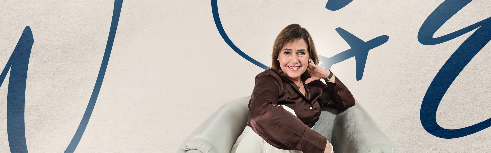
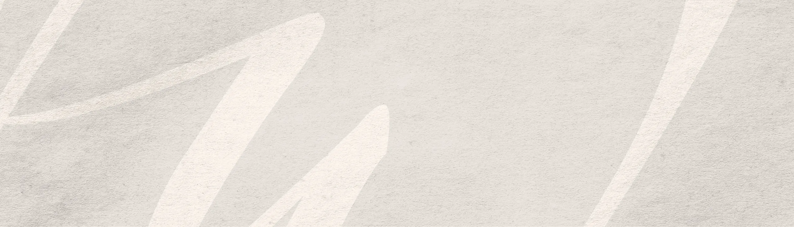
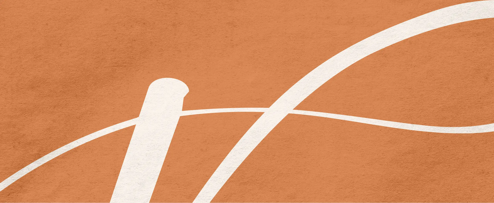

Paleta de cores
Medida no navegador: fundos ponderados pela área ocupada, textos pela quantidade de caracteres. Destaques reúnem cores saturadas e fundos de botão.
Fundos
#FFF8F0
Fundo · 61.9%
rgb(255, 248, 240)
rgb(255, 248, 240)
#DF8F5C
Fundo · 12.7%
rgb(223, 143, 92)
rgb(223, 143, 92)
#BCBCBC
Fundo · 10.6%
rgb(188, 188, 188)
rgb(188, 188, 188)
#E6DFD7
Fundo · 9.4%
rgb(230, 223, 215)
rgb(230, 223, 215)
#0F3D63
Fundo · 5.4%
rgb(15, 61, 99)
rgb(15, 61, 99)
Textos
#0F3D64
Texto · 84.2%
rgb(15, 61, 100)
rgb(15, 61, 100)
#FFFFFF
Texto · 15.8%
rgb(255, 255, 255)
rgb(255, 255, 255)
Destaques
#0F3D64
Destaque
rgb(15, 61, 100)
rgb(15, 61, 100)
#DF8F5C
Destaque
rgb(223, 143, 92)
rgb(223, 143, 92)
Gradientes
linear-gradient(156deg, rgb(255, 199, 164) 0%, rgb(223, 143, 92) 50%)Tipografia
Inter · Aa Bb Cc 0123
92% do texto · Se a sua cabeça não desliga, esta página é para você.crimson text · Aa Bb Cc 0123
3% do texto · Se a sua cabeça não desliga, esta página é para você.Crimson Text · Aa Bb Cc 0123
3% do texto · Se a sua cabeça não desliga, esta página é para você.Escala usada (desktop 1440px)
| Tamanho | Peso | Família | Amostra |
|---|---|---|---|
| 80px | 600 | Crimson Text | Texto de exemplo |
| 63px | 600 | Crimson Text | Texto de exemplo |
| 60px | 600 | Crimson Text | Texto de exemplo |
| 57px | 600 | Crimson Text | Texto de exemplo |
| 54px | 600 | crimson text | Texto de exemplo |
| 48px | 600 | crimson text | Texto de exemplo |
| 42px | 600 | crimson text | Texto de exemplo |
| 36px | 300 | Inter | Texto de exemplo |
| 34px | 300 | Inter | Texto de exemplo |
| 30px | 300 | Inter | Texto de exemplo |
Mobile (390px): 47px/600, 43px/600, 41px/600, 35px/600, 26px/600, 25px/500, 25px/300, 21px/300 · H1 no mobile: sem h1 semântico
Tags
| Tag | Família | Tamanho | Peso | Altura de linha | Espaçamento | Caixa | Cor |
|---|---|---|---|---|---|---|---|
| <h2> | Inter | 20px | 300 | 28px | -0.5px | none | #0F3D64 |
| <p> | Montserrat | 15px | 300 | 19.5px | normal | none | #FFFFFF |
Botões
Recriados com os estilos computados reais. Efeitos de hover e animação não aparecem aqui; veja a seção de animações.
AGENDAR SESSÃO
fundo #00000000 · texto #FFFFFF · raio 8px · padding 18px 38px · 18px/500 none · 5x na páginaCards e containers
Card (4x)
Co-autora do livro "Felicidade SA: Ensaio sobre a ciência e a prática do bem-estar Integra
raio 8px · sombra none · borda 0px none rgb(51, 51, 51) · 252x226pxCard (1x)
Tem alguma dúvida? Fale comigo, estou à disposição. +49 170 764 0759 @psi.vivianwiduch viv
raio 16px · sombra none · borda 2px solid rgb(223, 143, 92) · 456x472pxBordas, raios e sombras
8px
12px
10px
16px
18px
Sombras
Sem sombras relevantes.
Espaçamentos
- Largura do conteúdo mais comum: 1140px
- Padding vertical das seções (topo/base): 0px/0px (7x)
- Gaps mais usados (flex/grid): 20px, 5px, 30px, 50px, 10px
- Altura total da página: 5753px em 7 seções
Estrutura e ritmo de cores das seções
Cada faixa é uma seção de topo, com altura proporcional e a cor ou imagem de fundo real.
1. hero Psicóloga Online de Mulheres Imigrantes e Expatriadas 800px · padding 0px/0px
2. video Mudar de país é sempre uma travessia emocional, mas não prec 959px · padding 0px/0px
3. sobre Muito prazer, sou a Psicóloga 905px · padding 0px/0px
4. prova-social A jornada de autoconhecimento e adaptação nunca é linear. Ma 646px · padding 0px/0px
5. servicos Meus formatos de atendimento: 1085px · padding 0px/0px
6. faq Perguntas Frequentes 1235px · padding 0px/0px
7. contato Todos os direitos reservados © 2025 123px · padding 0px/0px
Animações, ícones e bibliotecas
- Keyframes próprios: nenhum keyframe próprio
- Animações de entrada do Elementor: nenhuma
- Classes de scroll reveal da casa: scroll-bottom, scroll-left, scroll-right, scroll-top
- Ícones: 15 SVG, 0 ícones de fonte
- Bibliotecas e tags detectadas: ga4, google-ads, gsap, happy-addons, jquery, lenis, lottie, meta-pixel, splitType, swiper
Snippets da biblioteca presentes nesta página
- Animação de entrada no scroll (scroll-left/right/top/bottom)
- Texto que aparece palavra por palavra no scroll (GSAP)
- Imagem que abre como tela de notebook (GSAP)
- Menu some ao rolar (GSAP)
- Pixel da Meta (Facebook)
- Tag do Google Ads (gtag)
- CSS base de toda página (o que sempre uso)
- Borda arredondada nos itens do FAQ (Alternar/Acordeão)
- Elemento solto (posição absoluta)
- Dropdown do Menu de Navegação centralizado no celular
Imagens do site




